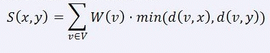
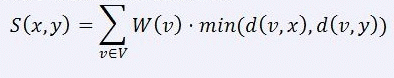

某个城市有N个区域，这些区域用1到N这N个正整数编号，并且它们之间通过N-1条道路相连，保证任意两个区域有路径相通。对于每个区域i,有一个正整数权值w(i)。记d(u,v)为区域u和区域v之间的距离，表示它们之间唯一的一条路径的边数。若u和v为同一个区域，则d(u,v)=0。
现在要选择两个区域建立消防站，你的任务是找出这两个不同的区域x和y使得以下的表达式S(x，y)的值最小。

| F.A.Qs | Home | Discuss | ProblemSet | Status | Ranklist | Contest | 入门OJ | ModifyUser Xeonacid | Logout | 捐赠本站 |
|---|

共N+1行。
第一行有一个正整数N，表示区域的个数。
接下来有N-1行，每行两个整数u、v，表述区域u和区域v之间有一条道路。
最后一行有N个正整数，第i个正整数表示区域i的权值W(i)。
包含一个正整数，为最小的S(x, y)的值。
【样例解释】
选取区域2和区域3。
【数据规模和约定】
用H表示距离区域1最远结点的距离，即d(1, u)的最大值。
对于30%的数据满足：2 ≤ N ≤ 300
余下70%的数据满足：2 ≤ N ≤ 50000、H ≤ 70、W(i) ≤ 100